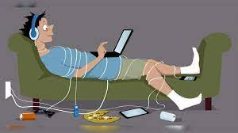

Teknoloji bağımlılığı, modern teknolojik cihazlar ve dijital içeriklere karşı aşırı bir arzu veya kontrolsüz bir kullanım durumudur. Bu durum, kişinin internet, akıllı telefonlar, bilgisayarlar veya video oyunları gibi teknolojik araçları kullanma alışkanlığının normalin ötesine geçmesiyle karakterizedir.
Teknoloji bağımlılığının belirtileri arasında sürekli teknolojik cihazlarla zaman geçirme isteği, gerçek dünya etkileşimlerinden kaçınma, uyku düzeninin bozulması, iş veya okul performansında düşüş, fiziksel sağlık sorunları ve duygusal sorunlar bulunur.
Teknoloji bağımlılığı, ilişki sorunlarına, izolasyona, fiziksel sağlık sorunlarına, dikkat eksikliğine, iş veya akademik başarısızlığa ve diğer olumsuz sonuçlara yol açabilir. Ancak, teknoloji bağımlılığıyla başa çıkmak mümkündür. Sağlıklı teknoloji kullanım alışkanlıkları geliştirmek, zaman yönetimi becerilerini artırmak ve destek almak bu süreçte yardımcı olabilir.